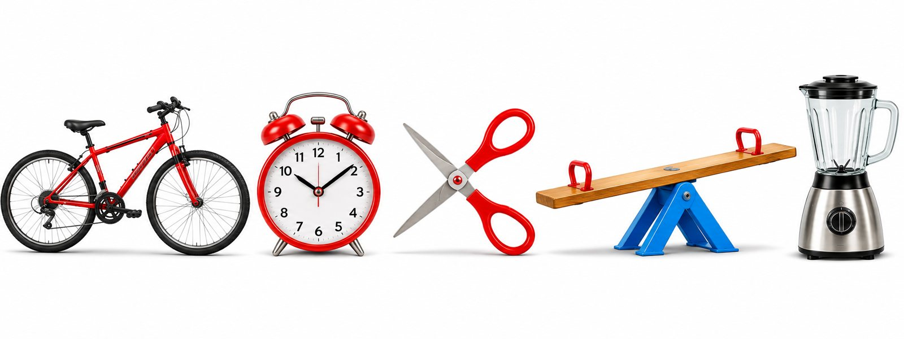

¿Dónde hay mecanismos?
Mira a tu alrededor: la bicicleta, el reloj, unas tijeras, el balancín del parque o la batidora de la cocina. Todos tienen piezas que se mueven y que nos ayudan a hacer las cosas con menos esfuerzo.

En todos ellos hay mecanismos. En esta unidad aprenderás a reconocerlos.
💬 Piensa: ¿qué pieza lleva el movimiento desde los pedales hasta la rueda de una bici?
¿Qué es un mecanismo?
Un mecanismo es un conjunto de piezas que transmite o transforma fuerzas y movimientos desde un elemento motriz (el que empieza el movimiento) hasta un elemento receptor (el que hace el trabajo).
⚙️ Mecanismo
Una sola parte que hace una tarea.
Ej.: la cadena de la bici.
Una sola parte que hace una tarea.
Ej.: la cadena de la bici.
🚲 Máquina
Varios mecanismos juntos que trabajan para un fin.
Ej.: la bicicleta entera.
Varios mecanismos juntos que trabajan para un fin.
Ej.: la bicicleta entera.
Recuerda: máquina = varios mecanismos unidos.
💡 ¡Un simple palo se convierte en máquina si lo usas como palanca para mover una piedra!
💡 ¡Un simple palo se convierte en máquina si lo usas como palanca para mover una piedra!
Las tres partes de una máquina
Todas las máquinas siguen el mismo camino:
1. Elemento motrizProduce la fuerza y el movimiento
➜
2. MecanismoTransmite o transforma el movimiento
➜
3. Elemento receptorHace el trabajo final
| Parte | ¿Qué hace? | Ejemplos |
|---|---|---|
| Motriz | Pone en marcha el movimiento | músculos, un motor, un muelle, el agua de un río |
| Mecanismo | Lleva o cambia el movimiento | engranajes, poleas, cadena, palancas |
| Receptor | Hace el trabajo para el que existe la máquina | ruedas, manecillas, aspas, un cubo que sube |
🎬 Las tres partes en la bicicleta
Un movimiento pequeño de las piernas se convierte en un gran avance de la bicicleta.
Más ejemplos
Toca una máquina y mira sus tres partes.
Tipos de movimiento
Antes de clasificar los mecanismos, hay que conocer los tres movimientos básicos:
Lineal
En línea recta, en un sentido.
Ej.: un cajón, una puerta corredera.
En línea recta, en un sentido.
Ej.: un cajón, una puerta corredera.
Circular
Gira alrededor de un eje.
Ej.: una rueda, las manecillas del reloj.
Gira alrededor de un eje.
Ej.: una rueda, las manecillas del reloj.
Alternativo
De ida y vuelta (vaivén).
Ej.: la aguja de coser, el pistón de un motor.
De ida y vuelta (vaivén).
Ej.: la aguja de coser, el pistón de un motor.
¿Transmiten o transforman?
Los mecanismos se pueden clasificar en dos grandes grupos:
➡️ Transmiten el movimiento
El movimiento que entra es del mismo tipo que el que sale.Giro ➜ giro. Ej.: engranajes, poleas, cadena, palanca.
El movimiento que entra es del mismo tipo que el que sale.Giro ➜ giro. Ej.: engranajes, poleas, cadena, palanca.
🔄 Transforman el movimiento
El movimiento cambia de tipo: por ejemplo, de giro a línea recta.Giro ➜ recto. Ej.: piñón-cremallera, biela-manivela, leva.
El movimiento cambia de tipo: por ejemplo, de giro a línea recta.Giro ➜ recto. Ej.: piñón-cremallera, biela-manivela, leva.
| Transmiten: movimiento lineal | Transmiten: giro | Transforman |
|---|---|---|
| palanca, polea | poleas con correa, engranajes, piñón y cadena | piñón-cremallera, biela-manivela, leva |
En esta unidad estudiaremos los que transmiten: palancas y poleas (parte 2) y la transmisión del giro (parte 3).
Piensa y responde
¿Qué diferencia hay entre una máquina y un mecanismo?
Una máquina está formada por varios mecanismos que trabajan juntos.En una bici, ¿cuál es el elemento motriz?
Las piernas del ciclista.¿Y el elemento receptor?
La rueda trasera, que hace avanzar la bici.¿Cómo se llama el mecanismo para sacar agua de un pozo dándole vueltas a una manivela?
Manivela-torno: la cuerda se enrolla en un cilindro y el cubo sube.Si una puerta corredera se mueve con un motor que gira, ¿el mecanismo transmite o transforma?
Transforma: pasa de un giro a un movimiento en línea recta.✏️ En tu cuaderno
Copia y completa en tu cuaderno (libro, págs. 84 y 85):
- La definición de mecanismo y la diferencia con una máquina.
- El esquema: Elemento motriz ➜ Mecanismo ➜ Elemento receptor.
- Haz una tabla con la bicicleta, el balancín, el reloj y el pozo: escribe su elemento motriz, su mecanismo y su elemento receptor.
Ver soluciones de la tabla
| Máquina | Motriz | Mecanismo | Receptor |
|---|---|---|---|
| Bicicleta | piernas | pedales, plato, cadena, piñón | rueda trasera |
| Balancín | peso de un niño | la barra (palanca) | el niño que sube |
| Reloj de pared | pesas o muelle | engranajes | manecillas |
| Pozo | brazos | manivela-torno y cuerda | el cubo |
Antes de entregar
🧩 Hacer las actividades autocorregiblesGlosario
- Mecanismo
- Piezas que transmiten o transforman fuerzas y movimientos.
- Máquina
- Conjunto de varios mecanismos que trabajan juntos.
- Elemento motriz
- El que produce la fuerza y el movimiento (músculos, motor, muelle…).
- Elemento receptor
- El que hace el trabajo final (rueda, manecillas, cubo…).
- Transmitir
- Llevar el movimiento de un sitio a otro sin cambiar su tipo.
- Transformar
- Cambiar el tipo de movimiento (por ejemplo, de giro a línea recta).
- Movimiento alternativo
- Movimiento de ida y vuelta, de vaivén.